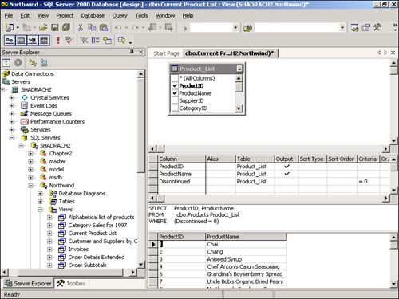
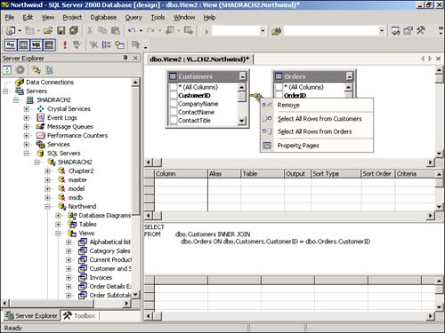

Note
In versions of SQL Server prior to 2000, use of views was frowned upon because of performance and sorting limitations, among other reasons. This has changed with 2000, where views are more flexible and offer better performance. |
After you figure out you want to use a view, the trick is to create it by using the designer. This How-To explains how to do this from within Visual Studio .NET, including specifying sort order and criteria.
Now that you have your tables created, with relationships in place, you can add data by double-clicking the table name in the Server Explorer. I also know how to bind forms and controls to data using data binding from the last chapter. How do you create views, using VS .NET?
Within SQL Server, you can view and manipulate data using one of three ways:
Views. These allow you to display different views of your data, including joining tables, sorting (SQL Server 200x), and using criteria. Views are limited to using the SELECT statement, and they can be used as the base for updating as well displaying data. Views are great when you need to filter your data but want to be able to update like you would a single table.
Stored procedures. Perform bulk operations such as updating, inserting, and deleting records. You can also create select queries that can be sorted. Another difference from Views is that you can use multiple SQL and control-of-flow statements within a stored procedure. You can also use parameters with stored procedures.
User-defined functions. User-defined functions are one of three types: Scalar, Table, and In-Line. These types combine the best features of views and stored procedures into a single query that you can nest, pass parameters to, sort, and return values.
You can find more on stored procedures in How-To 2.7.
When you want to have various views of your data that you will want to use throughout your application(s), you can create views to do so. You can then use the view to populate forms, controls, and reports.
Note
In versions of SQL Server prior to 2000, use of views was frowned upon because of performance and sorting limitations, among other reasons. This has changed with 2000, where views are more flexible and offer better performance. |
Within Visual Studio .NET, you can create, update, and delete SQL Server views all from within the Server Explorer, within the desired database. To work with views, you will use the Views Designer. For new views, you will choose New View while right-clicking on the Views node in the database. If you're editing, choose Design View while right-clicking on the desired view. You will then be taken into the View Designer, as shown in Figure 2.10, with the view called Current Product List.

As you can see from Figure 2.9, the View Designer has the four main areas mentioned:
Diagram pane. This area allows you to display the table or tables(s) that you will be using in your view. This could also contain the following: other views, user-defined functions, sub queries (in FROM clause, and linked views. You will also see check boxes (or other objects) flowing down the left side of the tables. These allow you to choose fields that you want to include. You can also see some other icons along the right side of the tables, when grouping and sorting fields or when using criteria. You will see examples of these if you look through the existing views in Northwind. You can also join tables so that you can view data using multiple record sources.
Grid Pane. This is where you will specify how you want individual columns to be handled within the view. The following table describes each property:
|
Column |
Description |
|---|---|
|
Column |
Display of either the name of a data column used for the query or the expression for a computed column. |
|
Alias |
The name you want to use in the result set. This allows you to either rename an existing column or name a new computed column. You might want to rename an existing column if you have the same column used in two different tables. |
|
Table |
The name of the table where the column is from. |
|
Output |
Whether to display the column in the results set. |
|
Sort Type |
Whether you want to sort the column in ascending or descending order. If you don't want to sort on the column, leave it blank. |
|
Sort Order |
Here you will specify where in the sorted columns you want to include this column. You can place a number that corresponds with the column order that you want this column included in. |
|
Group By |
This is where you specify that you want to use the current column for aggregating information. To get this column to show, you need to choose Group By from the Query menu. Besides Grouping data on this column, you can also specify functions such as Min, Max, Count, and more. |
|
Criteria |
This column allows you to specify to which value you would like to compare the column to narrow down and return specific records. If you specify values in multiple columns, you will create a Boolean (AND) expression. |
|
Or |
Placing values in these columns will cause Boolean (OR) expressions to be created. |
SQL Pane. You will see the SQL Select statement that is created by filling in the two previous panes mentioned.
Results Pane. As the title suggests, this pane will display the results of the view created when you click the Run Query toolbar button, which is the exclamation.
To learn how to create a view in Visual Studio .NET, you will create a view that displays all the orders for a given date, including the owners of each of the orders. You will also have the view sorted by CompanyName, then OrderID.
Open the Server Explorer and expand the Northwind database.
Right-click on the icon on the Views node and select New View from the menu. The Add Table dialog box will then be opened. From the menu, you will select the tables, views, or functions that you want to include in the view.
Select Customers. Then, holding down the Ctrl key, select the Orders table. Click Add and then click Close. The tables will then be dropped into the Diagram pane, and you will be presented with the View Designer.
One thing to notice is the symbol shown between the two tables, displayed in Figure 2.11. The symbol chosen by default in this case represents an inner join. An inner join is when values in the first table must match values from the second table, using the join column which, in this case, is CustomerID.

You can see the symbols for the other two types of joins displayed in the right-click menu. These types of joins include Left Outer Join (Select All Rows From Customers) and Right Outer Join (Select All Rows From Orders.) Using the various types of joins, you can alter the data results that are returned.
Place checkmarks in the CompanyName column, from the Customers table, and then the OrderID and OrderDate columns, located in the Orders table. When you place the checkmark in the columns, you will see both the Grid pane and the SQL pane fill out, provided you have them showing.
Next, type the expression = '7/19/1996' into the Criteria column of OrderDate, located in the Grid pane. If you just type the date, VS will place the other values around it. You have now added criteria. Only those orders with this date will be returned.
Pick Ascending for the Sort Type of the CompanyName and OrderID columns. Notice that Sort Order will be filled in automatically, depending on the order in which you pick the Sort Type.
When you click on the Run Query command, which is an icon on the toolbar, you will see two records displayed in the Results pane.
After a view has been created, you can use it in various ways throughout your applications. In the next chapter, you will see examples of using views with ADO.NET to populate various controls. You can also use view within views, store procedures, and user-defined functions. This is handy when you have a set of results that you want to use consistently in your applications and they rely on more than one table.